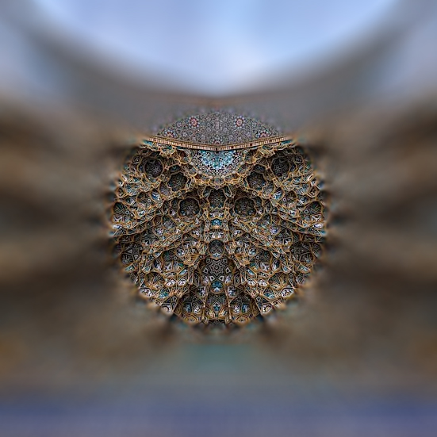
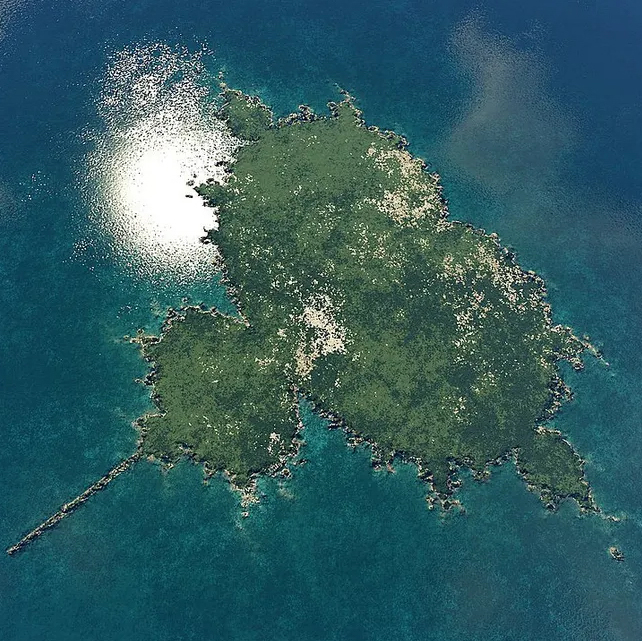
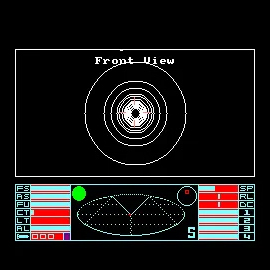

Cognitive Science for Machine Learning
I build AI systems at the intersection of experimental psychology, cognitive science, and applied machine learning. I'm currently focussed on novel evaluation and fine-tuning methods that align research riguour with compute capability in areas like AI Theory of Mind.

Better Relationships with AI
I want to communicate more meaningfully with AI. I believe that projects can cultivate trust using transparency. I find that collaborative co-creation refines mutual understanding and autonomy between users and systems, offering significant value. Demonstrations include conscientious systems for high-risk domains, and increasing access to specialist health insight.

Research Goals
Emerging cultures often inform widespread advancements. I'm currently researching new high-quality data collection methods for psycho-pharmacological clinical trials, plus how philosophy of mind can provide efficient organisational solutions for multi-agent, multi-stakeholder environments.